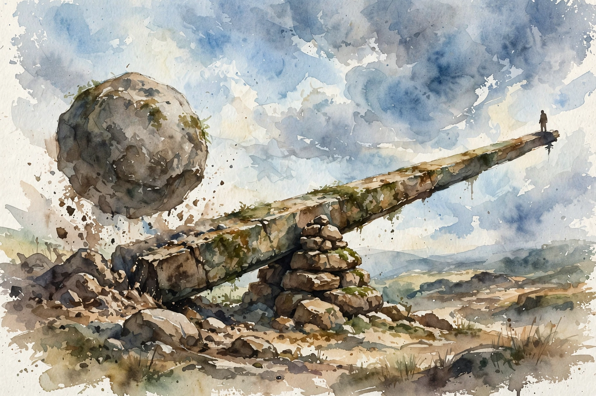

Naval Ravikant · The Model Is the Tool · Companion
Business Models With Leverage
Can the business model itself multiply your force? Scale economies, zero marginal cost, and network effects: Metcalfe's law, the winner-take-all secret of Silicon Valley, language as the oldest network, and why your users should build value for each other while you sleep.

Illustration. The ancient lever: small force, massive result. AI-generated watercolor made for this page.
Watch. The official Naval podcast episode video. Use the chapter menu above to jump to any section of this companion as you listen.
The Wisdom Index: every nugget in this companion
00:00
Can the business model itself be the tool?
The question from Nivi: beyond personal tools like code and media, can the choice of business model bring its own force multiplication? Naval says yes, and names three microeconomic concepts every founder should understand: scale economies, zero marginal cost of reproduction, and network effects.
The three travel together. Anything with zero marginal cost obviously has scale economies, and zero-marginal-cost things often develop network effects, because stamping out another copy costs nothing, so you can add hooks for users to create value for each other.
Wisdom nugget 1
Source factPick the model, not just the product
What happened. Naval says business-model choice is itself a source of force multiplication, via three specific mechanisms.
Why it matters. Founders obsess over product and ignore the model. The model decides the ceiling before the product ships.
Principle. Score every idea on all three: scale economies, reproduction cost, network effects. Two out of three is the minimum.
00:02
Scale economies
Economics 101, but easy to skip: the more you produce of something, the cheaper each unit gets. Widget number 12 costs less than widget number 5. Widget number 10,000 costs far less than the early ones. That cost curve becomes an automatic barrier against competition and commoditization.
The advice is direct: get into a business where the ten-thousandth unit is dramatically cheaper than the fifth.
Wisdom nugget 2
Source factLet volume be your moat
What happened. Naval defines scale economies through the widget example and says they build automatic barriers to entry.
Why it matters. Without scale economies, every competitor can match your cost. With them, time is on your side.
Principle. Ask: does my 10,000th unit cost a fraction of my 5th? If not, find the volume game or change games.
00:04
Zero marginal cost
Technology and media products have a stranger property: "zero marginal cost of reproduction". One more copy costs nothing. When someone new listens to this podcast or watches the video, it costs Naval nothing for that next person to show up.
These businesses start slow, because you earn very little per user, and then they compound. Joe Rogan is the example: he works no harder on podcast number 1,100 than on number one, but on number 1,100 he is "making a million dollars" for the episode, where the first one probably lost money.
Zero marginal cost: podcast 1 vs podcast 1,100
Joe Rogan works no harder on episode 1,100 than on episode 1. The economics are unrecognizable.
Source. Episode: the Joe Rogan zero-marginal-cost example.
Illustration. The press: one carving, infinite copies at zero extra cost. AI-generated watercolor made for this page.
Wisdom nugget 3
Source factCreate once, sell forever
What happened. Naval says zero-marginal-cost products earn little per user early, then add up enormously, using Rogan's 1-to-1,100 arc.
Why it matters. It explains why creators should endure the flat beginning: the cost curve, not the talent curve, is what changes.
Principle. Build things with zero reproduction cost. Survive the slow start. The math turns vertical later.
00:06
Network effects
The subtlest and most important of the three. Bob Metcalfe, who created Ethernet, coined the law: "the value of a network is proportional to the square of the number of nodes in the network". A network of 10 has value 100. A network of 100 has value 10,000. Not ten times more. One hundred times more, because of the square.
The consequence is "winner-take-all". If you are number one in a network-effects business, you win everything. Facebook has no real competitor in social networking because everyone is already there. Uber beats Lyft as long as it moves more drivers and riders. Google stands alone in search. Twitter in microblogging. YouTube in video. "network effects create natural monopolies", and a dirty secret of Silicon Valley is how many winners are natural monopolies, even ride-sharing.
Metcalfe's law: value grows as the square
A network of 10 has value 100. A network of 100 has value 10,000. Ten times the nodes, one hundred times the value.
■ Network value (n squared)
Source. Episode: Bob Metcalfe's law as stated in the episode.
Toy: the Metcalfe machine
Move the slider. Network value grows as the square of the nodes, per the episode.
Wisdom nugget 4
Source factBe number one or be nowhere
What happened. Naval states Metcalfe's law and argues that network effects produce natural monopolies across social, search, video, and ride-sharing.
Why it matters. In network markets, second place is not half as good. It is nearly worthless. The strategy must be winner-take-all or do not play.
Principle. Enter network-effect markets only with a credible path to number one. Otherwise pick a different game.
00:10
Language: the oldest network effect
The definition, precisely: a network effect is when each additional user adds value to the existing user base. Your users create value for each other. The classic example everyone understands is language.
Imagine 100 people speaking 10 languages, each person knowing one. Translation is constant pain. If all 100 spoke one language, the value explodes. The dynamics are inevitable: once English reaches 20 or 25 speakers out of 100, it owns the whole language marketplace and the rest get competed out. That is why the world converges on English, and why a technical education in almost any country still requires reading untranslated English books.
Illustration. The ancient lever: small force, massive result. AI-generated watercolor made for this page.
Wisdom nugget 5
Source factFind the tipping point
What happened. Naval uses language to show how network effects tip: past a threshold share, one standard takes the whole market.
Why it matters. Tipping dynamics mean early leads become permanent. The fight is for the threshold, not the endgame.
Principle. In any network market, identify the tipping share and aim all resources at crossing it first.
00:12
Pick the model deliberately
Money itself is a network effect: the world tends to use one reserve currency at a time, currently the US dollar, with geography and regulation creating artificial islands. The lesson generalizes.
When picking a business model, choose one where you benefit from network effects, low marginal costs, and scale economies. And always ask the ultimate question: how can your users add value to each other? That is the highest form of force multiplication. Your customers create value for each other while you sleep on a beach in the Bahamas.
Wisdom nugget 6
Source factMake users build value for each other
What happened. Naval closes by saying the ultimate tool is a user base that adds value to itself while the founder sleeps.
Why it matters. Every other tool still needs you. A self-reinforcing user network works without you entirely.
Principle. Design the loop where user N makes the product better for users 1 through N-1. Then get out of the way.